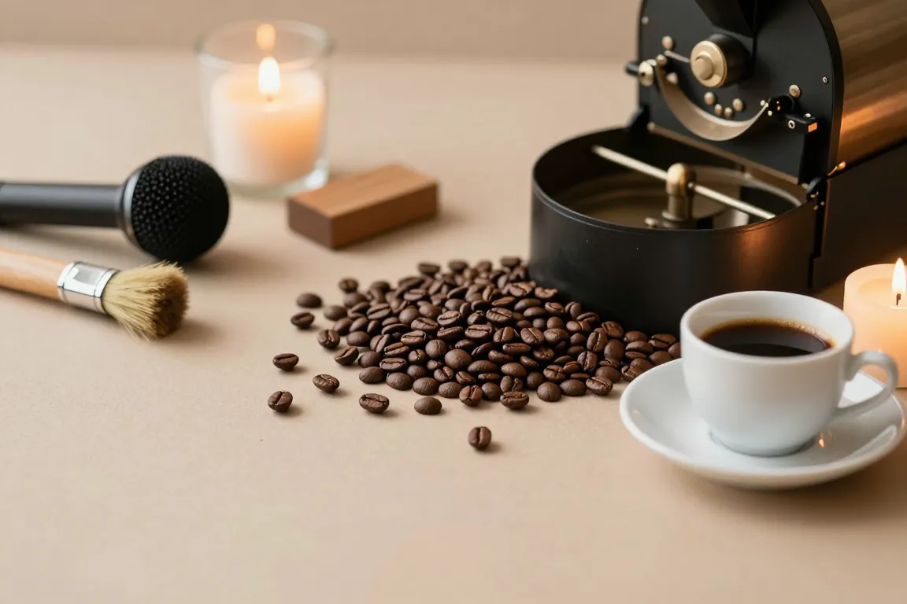

веб · 2010–now · также: ASMR, Видео-шёпот, Видео с мурашками
Мягкая близкая картинка с микрофоном рядом с объектом. Медленные руки стучат, водят кистью и шепчут. Вид приглушённый, тёплый и тихий, почти без текста, потому что работу несёт звук.

Главная идея
Замедлите картинку под звук: спокойный кадр, мягкий свет и близкий микрофон помогают зрителю расслабиться.
Принципы дизайна
Светите сцену на 2700–3200K одной мягкой лампой и держите света ниже 85% белого.
Ставьте объект в 30 см от объектива и держите фон не в фокусе на f/2 или шире.
Двигайтесь вполовину скорости: одно действие на 4–8 с, без резких склеек.
Держите каждый план минимум 8 с и делайте кроссфейд на 1–2 с, когда склейка нужна.
Берите приглушённый грейд с поднятыми чёрными (#1A1614) и без чистого белого.
Держите текст до заголовка 24px при 70% непрозрачности на первые 3 с; субтитры не добавляйте.
Показывайте обе стороны стерео с левым и правым предметом на расстоянии 1 м, чтобы зритель видел, как звук движется.